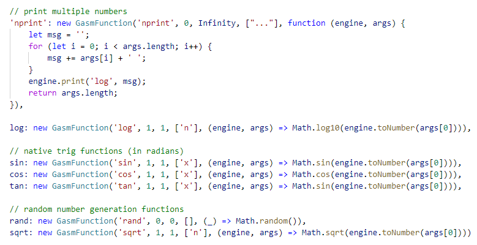
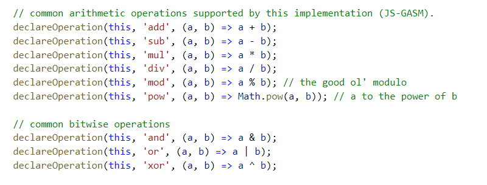

GASM Reference
GASM Stands for "Graphic Assembly Language", or "Graphic ASM". It is a constructed esolang invented by Hongtian Yu as his Year 10 IST project in 2020. The language is intended to be (mostly) of a demonstrative nature, and its goal to be different to those of most languages – it could either be compiled, or executed in realtime, in order to produce a graphic, or an image, from accurate calculations done by modern general programmable computing devices.
Why GASM?
Even though most modern painting or graphic(s) processing software allows us to create pictures and other graphics, they are not accurate – most of the times you will have to create shapes and lines by hand.
Consider the regular n-gon problem or the
sine wave problem: how would you easily create these things with the
free & light-weight tools available today?
GASM is a solution to these problems – you could now combine programming and graphics together
with this language! Whilst being a language specifically designed for this purpose, GASM actually has
an extremely minimalistic core ; yet it provides an extensive instruction set and a variety of highsly
customisable and extensible features and libraries.
All the pages in this website use the same engine, written in modern Javascript by the creator of this language, Hongtian Yu. This implementation is therefore named "JS-GASM".
Tags/Labels Used
In the sections below you may encounter on or more of the following tags/labels:
| @unused |
It may be in the GASM standard, but is currently reserved and unused.
It should not be included in any implementations. |
| @experimental | Experimental feature. May not be stable. |
| @draft | This means that this is a draft feature. It is probably not yet implemented in most of the modern implementations – not even in JS-GASM. |
| @unimplemented or @unsupported | This means that it is currently not supported by JS-GASM. See below for more information. |
Data & Types
All data in GASM are stored as numbers.
The precision is not specified by the standard,
but 32-bit or 64-bit integer and floating-point types
that support complex numbers are recommended.
However, this could be ignored as GASM
is a platform and architecture independent language.
Registers
GASM provides a series of default registers to store
temporary data produced from the instructions.
They could only be set by internally by GASM, and are
therefore read-only.
- `$ret` - the return value from the last function call
- `$[operation_name]` - values calculated by operations. e.g. for `add 1, 1`, the result will be stored in `$add`.
- `$cmp` - used to store the compare value. In JS-GASM, it's a four-bit integer.
- `$argc` - @unused
- `$var`, `$func` - @draft @unimplemented
- `$w`, `$h` - the width and height of the canvas
- `$pi, $deg2rad, $rad2deg...` - mathematical constants.
GASM Syntax
GASM has a very simple syntax, as it is an Intel x86 Assembly-like language: ``` [span class="gasm-instruction"]<<instruction>>[/span] [argument1, argument2...] ``` For literal numerical values, the following form should be accepted:
- Decimal form: e.g. `1024`, `01200` (not octal, = `1200`), and `0.250`
- Hex form: `0xFFabcd18`
- Binary form: `0b001110010110`
- Scientific notation: `2.567e-23`
Instructions
[[path]]
`path { [i]begin[/i] | { [i]end[/i] | [i]close[/i] } | [span class="gasm-instruction"]to[/span]
[i]x, y[/i] }`
Marks paths.
Paths are closed shapes consisted of `line`s –
even though they may not be drawn.
Arguments (mutually exclusive):
- `begin`: begins a path. Does not draw anything, and is to be used by `fill`.
- `close` (or `end`): marks the end of the current path and automatically closes it with a `line`.
- `[span class="gasm-instruction"]to[/span]`: creates an invisible path in order to `fill` without borders (only a draft feature) (Unimplemented in JS-GASM) @unused
`movp [i]x[/i], [i]y[/i] `
Marks the starting position of a `line` or `path`.
`line [i]x[/i], [i]y[/i] `
Marks the ending position of a line and draws it
from the point set by `movp`.
The next line will start from the ending position of this line,
if no `movp` or `path close` is called.
`lwid [i]number[/i] `
Sets the width of the line to be drawn by `line`
in pixels.
`fill `
@experimental
Fills the area marked/enclosed by `path`. If the path is not closed,
it should automatically close it. (Experimental)
`rgba { line | fill }, { [i]#HEX_COLOR[/i] | [i]r, g, b[/i] }`
Sets the color used by instructions such as `line` and `fill`.
Its first parameter is the instruction.
For the second parameter, a color value is to be specified;
it could be any of the following:
- A hexadecimal value representing the rgba value, e.g. #aabbccdd, #ABC
-
Four integers between 0 and 255 representing red, green and blue values,
and an alpha between 0 and 1, e.g. `rgba 128, 64, 57, 0.5`
`set $.variable.name [value]`
All variables must have a namespace,
i.e. the default namespace `$.` in order to distinguish
them from the registers.
`del $.variable.name`
@experimental
Removes a variable.
It could not be referenced from now on.
`print { text | number | $variable, ...}`
Prints a message onto the standard output,
e.g. the browser's Javascript developer console,
or the GASM Console.
`func [b]function_name[/b] [i]arguments...[/i]`
Defines a function.
-
function_name - The name of the function
- The name may contain namespace(s): e.g. `func .util.main.draw_image` @draft @experimental
- arguments... - The arguments @draft @unsupported
`call func_name [ [i]arg1, arg2...[/i] ]`
Calls a function. The function could either be a custom function,
or a predefined standard function – refer to the JS-GASM
implementations below:

`ret [value]`
@experimental
Returns a value from the current function.
Sets the register `$ret` to the value and exits.
@experimental
Will dump the values of every register in the standard output
for debugging purposes.
Common Operations
Common operations include the following (shown through the JS-GASM implementation again):  Adding an `s` (for "self") after the operation will cause GASM to store the result in the variable given in the first parameter, e.g. `adds $.a, 3 ; add 3 to $.a`.
Common Conditionals
Conditional instructions, called "conditionals" in GASM, will only be executed
if the condition set for the result of the last `cmp` instruction is true.
It includes the following: `e, ne, g, ge, l, le`.
`e` means equal, and `g` and `l` mean greater or lesser.
They are to be combined with `call` or `set`, like `sle` or `cg`,
e.g.
```add 1, 1
cmp $add, 2
cge printn 1, 2, 3 ; only calls printn(1, 2, 3) if 1 + 1 >= 2
```
Notes On My Draft (and Unsupported) Features
Some of them I didn't have time to implement, while others may just be a discarded feature.